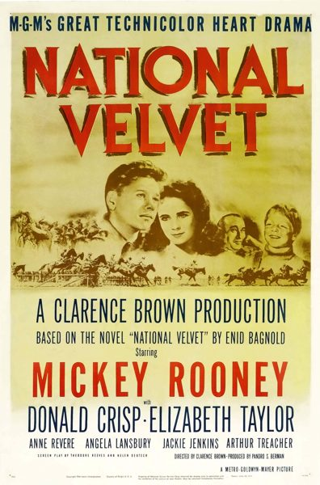

National Velvet

Starring: Mickey Rooney, Donald Crisp, Elizabeth Taylor
Director: Clarence Brown
Writer: Helen Deutsch
Producer: Pandro S. Berman
National Velvet is a 1944 American Technicolor sports film directed by Clarence Brown and based on the 1935 novel of the same name by Enid Bagnold, about a young English girl who rides a racehorse. It stars Mickey Rooney, Donald Crisp, Angela Lansbury, Anne Revere, Reginald Owen, and an adolescent Elizabeth Taylor.
Trivia
- Won the Academy Award for Best Supporting Actress.
- Won the Academy Award for Best Film Editing.
- Also nominated for: Academy Award for Best Director; Academy Award for Best Cinematography, Color; Academy Award for Best Art Direction, Color.
- Based on National Velvet (1935 novel by Enid Bagnold).
- An 18-year-old Gene Tierney, who was then appearing on Broadway, was offered the role of Velvet Brown in 1939.
- Production was delayed, however, so Tierney returned to Broadway.
- Elizabeth Taylor was given "The Pie" as a birthday gift after filming was over.
Filming Locations
- California
- Santa Monica
- Much of the film was shot in Pebble Beach, California, with the most-scenic views on the Pebble Beach Golf Links (with golf holes visible in the background).
- Mickey Rooney's scenes were shot first in one month allotted by the U.S. Army before Rooney was inducted in June 1944.
Previous Showings
6 Runs • 3 Festivals
Original Billings: 1 run (May 20, 1945)
Original Run: May 20, 1945 (Sunday - Wednesday)
All runs on record (6):
- May 20, 1945 (Sunday - Wednesday)Mickey Rooney, Elizabeth Taylor
- March 1 - 5, 1991w/ Lassie Come Home
- June 30, 1994w/ The Yearling
- December 3 - 4, 2005Fall 2005w/ Down Argentine Way
- April 1 - 5, 2011Elizabeth Taylorw/ Lassie Come Home
- August 4 - 5, 2014Summer 2014w/ First Love